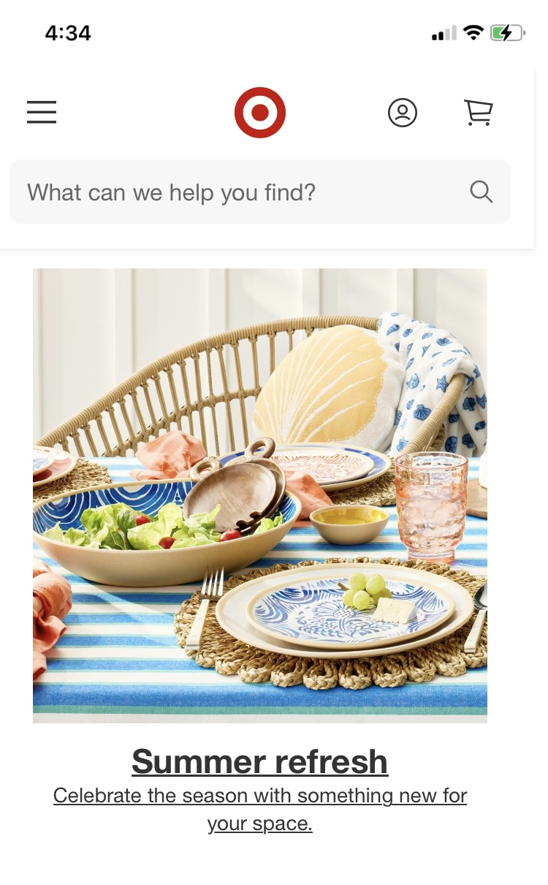
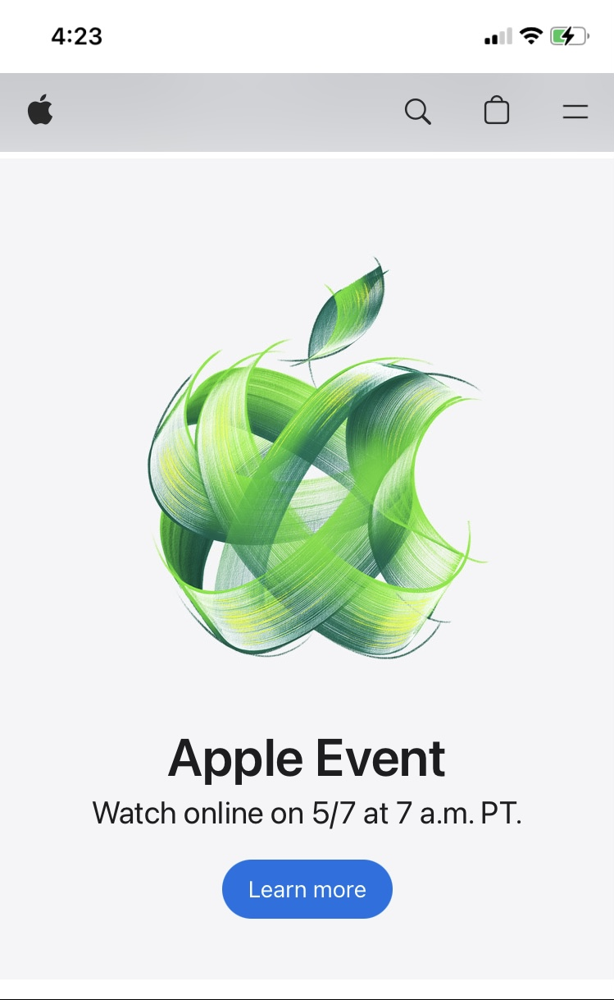

Visual Hierarchy
Girl Boss
girlboss.comGirl boss uses visual hierarchy well. The first group you see are the larger, bolded words. Then your eyes travel down to the buttons on the bottom. Finally, things settle in the middle where the copy is located, delivering the final part of the message.
Rule of Thirds
Target
target.com In this Target ad on their website, imagine drawing a tic-tac-toe board. Notice that the shell pillow, salad bowl, and dinner plate all fall on a horizontal or vertical third. Positioning things with such spacing creates an interesting and pleasing image to view.
White Space
Apple
apple.com White space is our friend, and Apple shows their committed relationship. The use of white space allows one to focus on the intent of the page without other words or images competing for brain space. It keeps things serene and clear, encouraging people to stay a while.